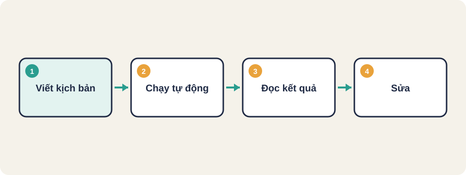
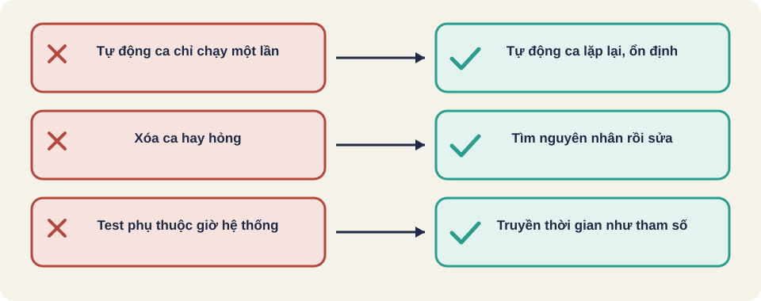

Hình vẽ gốc, dùng để minh họa thứ tự các bước chính của bài.
Khi nào nên tự động hóa, quy trình, tháp kiểm thử và các lỗi thường gặp với test tự động.

Hình vẽ gốc, dùng để minh họa thứ tự các bước chính của bài.
1. Viết kịch bản: đầu vào, hành động, kết quả mong đợi
2. Chạy tự động trên môi trường giống thật
3. Đọc kết quả, sửa kịch bản hoặc sửa lỗidang_nhap("user", "sai-mat-khau")
kiem(thong_bao == "Sai mật khẩu")Kịch bản đơn giản, dễ đọc, chạy lại được sau mỗi lần sửa code.
Lúc đậu lúc hỏng dù code không đổi. Thường do thời gian chờ, dữ liệu chung, hoặc giao diện tải chậm.
Cách xử lý: chờ đúng điều kiện thay vì chờ cố định, và để mỗi test có dữ liệu riêng.
Ca "kiểm giao diện logo đúng màu một lần khi ra mắt" không nên tự động: nó chỉ chạy một lần, và nhận ra màu đúng cần mắt người.
| Nguyên nhân | Triệu chứng | Cách xử lý |
|---|---|---|
| Chờ theo số giây cố định | Đậu khi máy nhanh, hỏng khi máy chậm | Chờ theo điều kiện |
| Dữ liệu dùng chung | Ca này làm ca kia lỗi | Mỗi ca tạo dữ liệu riêng |
| Phụ thuộc mạng hoặc dịch vụ ngoài | Hỏng ngẫu nhiên | Dùng bản giả (mock) hoặc môi trường cố định |
| Phụ thuộc thời gian | Hỏng vào một giờ nhất định | Truyền thời gian vào như tham số |
Nguồn: Selenium WebDriver documentation (selenium.dev) [đã đọc, phần khái niệm]. Các nguyên nhân khác là kiến thức chung.
Thuật ngữ trong slide này: Chờ theo điều kiện (explicit wait): Chờ đến khi một điều kiện đúng, thay vì chờ cố định bao nhiêu giây.
// Không tốt: chờ cứng
sleep(5);
click("Gửi");
// Tốt: chờ đến khi nút sẵn sàng, tối đa 10 giây
wait_until(nut_gui_hien_thi, timeout=10);
click("Gửi");Nguồn: Selenium WebDriver documentation (selenium.dev) [đã đọc, phần khái niệm].
Tháp tự động hóa cũng áp dụng như tháp kiểm thử: nhiều ca đơn vị, ít ca giao diện. Nếu đội có nhiều ca giao diện chậm và hay hỏng, nên chuyển bớt xuống mức đơn vị hoặc tích hợp.
Kiến thức chung, chưa đối chiếu nguồn gốc.
Thuật ngữ trong slide này: Tự động hóa (automation): Dùng máy để chạy các ca kiểm thử lặp lại, thay cho công làm tay.
Kiến thức chung, chưa đối chiếu nguồn gốc.

Test không ổn định (flaky test)
Chờ theo điều kiện (explicit wait)
Tự động hóa (automation)
Thuật ngữ trong slide này: Test không ổn định (flaky test): Ca test lúc đậu lúc hỏng dù code không đổi. · Tự động hóa (automation): Dùng máy để chạy các ca kiểm thử lặp lại, thay cho công làm tay.
Tự động hóa có chi phí viết và bảo trì. Chỉ nên làm khi lợi ích lớn hơn chi phí.
Thuật ngữ trong slide này: Tự động hóa (automation): Dùng máy để chạy các ca kiểm thử lặp lại, thay cho công làm tay.
Nguyên nhân phổ biến của test không ổn định là chờ theo số giây cố định. WebDriver có cơ chế chờ theo điều kiện, ví dụ chờ phần tử hiển thị rồi mới thao tác.
Nguồn: Selenium WebDriver documentation (selenium.dev), mục WebDriver [đã đọc]. Ý về chờ theo điều kiện là cách làm chung [kiến thức chung].
Thuật ngữ trong slide này: Test không ổn định (flaky test): Ca test lúc đậu lúc hỏng dù code không đổi. · Chờ theo điều kiện (explicit wait): Chờ đến khi một điều kiện đúng, thay vì chờ cố định bao nhiêu giây.
Martin Fowler khuyên tách thao tác trên trang khỏi kịch bản. Assertion nên giữ ngoài lớp trang, trừ kiểm tra trạng thái bất biến. Điều này giúp đổi giao diện mà không phải sửa kịch bản.
Nguồn: Martin Fowler, Page Object [đã đọc].
Nguồn: github.com/PaulWaltersDev/FreeLearningResourcesForSoftwareTesters, mục "Test Automation". Tìm tên tài liệu trong repo để lấy liên kết.
Thuật ngữ trong slide này: Tự động hóa (automation): Dùng máy để chạy các ca kiểm thử lặp lại, thay cho công làm tay.